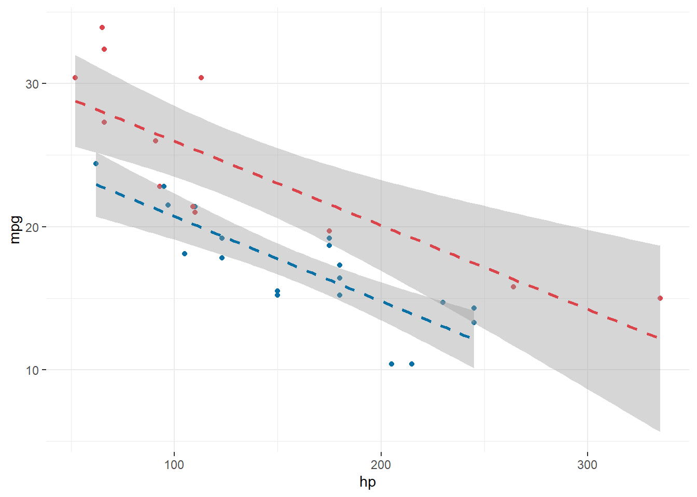

Code
library(ggplot2)
mtcars |>
ggplot(aes(hp, mpg, colour = as.factor(am))) +
geom_point() +
geom_smooth(
method = "lm",
linetype = "dashed",
formula = y ~ x
) +
theme_bw() +
theme(
panel.border = element_blank(),
legend.position = "none"
)+
scale_color_manual(values = c("#0870A5", "#DB444B"))